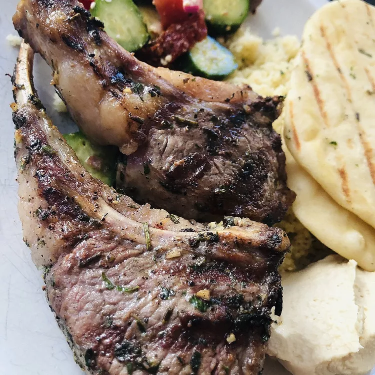

Lamb Shawarma

Description
This is a wonderful Middle Eastern dish that I was introduced
to by a friend of mine from Lebanon. This recipe yields an
absolutely amazing tasting and tender final product. Shawarma
can be used in pitas, be put on fattoush, on hommus, or eaten plain.
Ingredients
- ½ cup plain yogurt
- ¼ cup water
- 2 tablespoons fresh lemon juice
- 1 tablespoon distilled white vinegar
- 1 tablespoon olive oil
- ½ cup chopped onion
- 2 cloves garlic, minced
- 1 tablespoon salt
- ½ teaspoon ground black pepper
- ½ teaspoon ground cumin
- ⅛ teaspoon ground nutmeg
- ⅛ teaspoon ground cloves
- ¾ teaspoon ground mace
- 1 teaspoon cayenne pepper
- 5 pounds boneless lamb shoulder, cut into 1/4-inch-thick strips
Steps
- Place the yogurt, water, lemon juice, vinegar, olive oil,
onion, and garlic into a large mixing bowl. Whisk in the
salt, black pepper, cumin, nutmeg, clove, mace, and cayenne
pepper until evenly blended. Mix in the lamb strips to coat.
Cover the bowl with plastic wrap, and marinate in the refrigerator
12 to 24 hours (the longer the better).
- Heat a large skillet over high heat. Cook the lamb strips
in a single layer in batches until the fat melts and the meat
has browned and is no longer pink on the inside, about
5 minutes, turning occasionally.